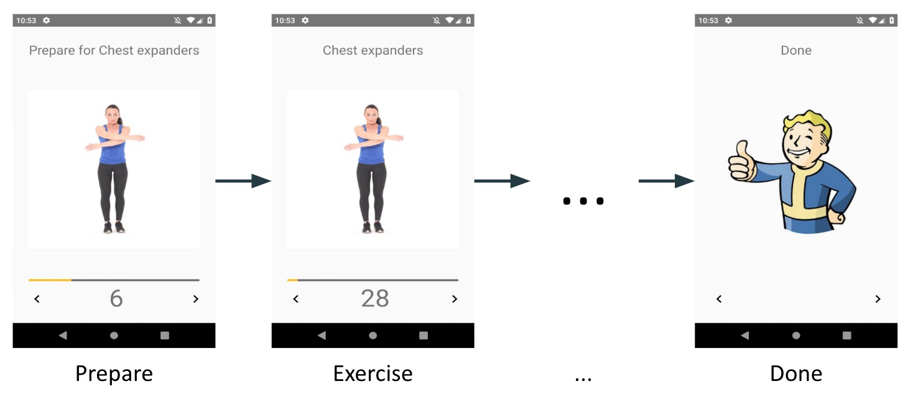

Item 39: Prefer class hierarchies to tagged classes
It is not uncommon in large projects to find classes with a constant “mode” that specifies how the class should behave. We call such classes tagged as they contain a tag that specifies their mode of operation. There are many problems with them, and most of those problems originate from the fact that different responsibilities from different modes are fighting for space in the same class even though they are generally distinguishable from each other. For instance, in the following snippet, we can see a class that is used in tests to check if a value fulfills some criteria. This example is simplified, but it’s a real example from a large project2.
class ValueMatcher<T> private constructor(
private val value: T? = null,
private val matcher: Matcher
){
fun match(value: T?) = when(matcher) {
Matcher.EQUAL -> value == this.value
Matcher.NOT_EQUAL -> value != this.value
Matcher.LIST_EMPTY -> value is List<*> &&
value.isEmpty()
Matcher.LIST_NOT_EMPTY -> value is List<*> &&
value.isNotEmpty()
}
enum class Matcher {
EQUAL,
NOT_EQUAL,
LIST_EMPTY,
LIST_NOT_EMPTY
}
companion object {
fun <T> equal(value: T) =
ValueMatcher<T>(value = value, matcher =
Matcher.EQUAL)
fun <T> notEqual(value: T) =
ValueMatcher<T>(value = value, matcher =
Matcher.NOT_EQUAL)
fun <T> emptyList() =
ValueMatcher<T>(matcher = Matcher.LIST_EMPTY)
fun <T> notEmptyList() =
ValueMatcher<T>(matcher =
Matcher.LIST_NOT_EMPTY)
}
}
There are many downsides to this approach:
- Additional boilerplate from handling multiple modes in a single class
- Inconsistently used properties, as they are used for different purposes. Also, the object generally has more properties than they need as they might be required by other modes. For instance, in the example above, value is not used when the mode is
LIST_EMPTYorLIST_NOT_EMPTY. - It is hard to protect state consistency and correctness when elements have multiple purposes and can be set in a few ways.
- It is often required to use a factory method because otherwise, it is hard to ensure that objects are created correctly.
Instead of tagged classes, we have a better alternative in Kotlin: sealed classes. Instead of accumulating multiple modes in a single class, we should define multiple classes for each mode, and use the type system to allow their polymorphic use. Then the additional sealed modifier seals those classes as a set of alternatives. Here is how it could have been implemented:
sealed class ValueMatcher<T> {
abstract fun match(value: T): Boolean
class Equal<T>(val value: T) : ValueMatcher<T>() {
override fun match(value: T): Boolean =
value == this.value
}
class NotEqual<T>(val value: T) : ValueMatcher<T>() {
override fun match(value: T): Boolean =
value != this.value
}
class EmptyList<T>() : ValueMatcher<T>() {
override fun match(value: T) =
value is List<*> && value.isEmpty()
}
class NotEmptyList<T>() : ValueMatcher<T>() {
override fun match(value: T) =
value is List<*> && value.isNotEmpty()
}
}
Such implementation is much cleaner as there are not multiple responsibilities tangled with each other. Every object has only the data it requires and can define what parameters it is willing to have. Using a type hierarchy allows to eliminate all shortcomings of tagged classes.
Sealed modifier
We do not necessarily need to use the sealed modifier. We could use abstract instead, but sealed forbids any subclasses to be defined outside of that file. Thanks to that, if we cover all those types in when, we do not need to use an else branch, as it’s guaranteed to be exhaustive. Using this advantage, we can easily add new functionalities and know that we won’t forget to cover them in these when statements.
This is a convenient way to define operations that behave differently for different modes. For instance, we can define reversed as an extension function using when, instead of by defining how it should behave in all subclasses. New functions can be added this way even as extensions.
fun <T> ValueMatcher<T>.reversed(): ValueMatcher<T> =
when (this) {
is ValueMatcher.EmptyList ->
ValueMatcher.NotEmptyList<T>()
is ValueMatcher.NotEmptyList ->
ValueMatcher.EmptyList<T>()
is ValueMatcher.Equal -> ValueMatcher.NotEqual(value)
is ValueMatcher.NotEqual -> ValueMatcher.Equal(value)
}
On the other hand, when we use abstract we leave the door open for other developers to create new instances outside of our control. In such a case, we should declare our functions as abstract and implement them in the subclasses, because if we use when, our function cannot work properly when new classes are added outside of our project.
Sealed modifier makes it easier to add new functions to the class using extensions or to handle different variants of this class. Abstract classes leave space for new classes joining this hierarchy. If we want to control what are the subclasses of a class, we should use the sealed modifier. We use abstract mainly when we design for inheritance.
Tagged classes are not the same as state pattern
Tagged classes should not be confused with the state pattern, a behavioral software design pattern that allows an object to alter its behavior when its internal state changes. This pattern is often used in front-end controllers, presenters or view models (respectively from MVC, MVP, and MVVM architectures). For instance, let’s say that you write an application for morning exercises. Before every exercise, there is preparation time, and in the end, there is a screen that states that you are done with the training.

When we use the state pattern, we have a hierarchy of classes representing different states, and a read-write property we use to represent which state is the current one:
sealed class WorkoutState
class PrepareState(val exercise: Exercise) :
WorkoutState()
class ExerciseState(val exercise: Exercise) :
WorkoutState()
object DoneState : WorkoutState()
fun List<Exercise>.toStates(): List<WorkoutState> =
flatMap { exercise ->
listOf(PrepareState(exercise),
ExerciseState(exercise))
} + DoneState
class WorkoutPresenter( /*...*/ ) {
private var state: WorkoutState = states.first()
//...
}
The difference here is that:
- The state is a part of a bigger class with more responsibilities
- The state changes
The state is generally kept in a single read-write property state. The concrete state is represented with an object, and we prefer this object to be a sealed class hierarchy instead of a tagged class. We also prefer it as an immutable object and whenever we need to change it, we change state property. It is not uncommon for state to later be observed to update the view every time it changes:
private var state: WorkoutState by
Delegates.observable(states.first()) { _, _, _ ->
updateView()
}
Summary
In Kotlin, we use type hierarchies instead of tagged classes. We most often represent those type hierarchies as sealed classes as they represent a sum type (a type collecting alternative class options). It doesn’t collide with the state pattern, which is a popular and useful pattern in Kotlin. They actually cooperate as when we implement state, we prefer to use sealed hierarchies instead of tagged classes. This is especially true when we implement complex yet separable states on a single view.